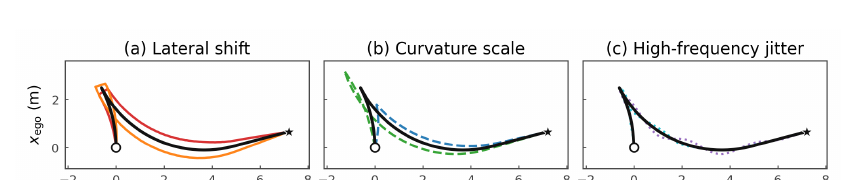
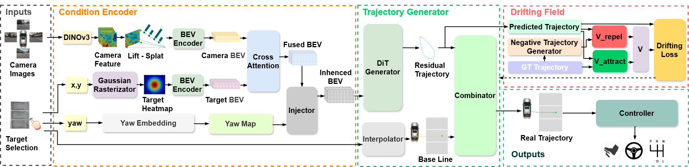
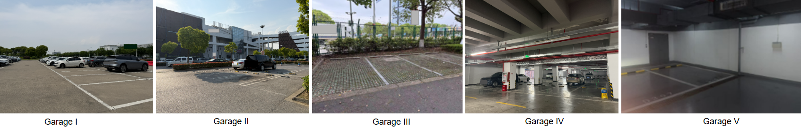

Condition Encoder
DINOv3 + LSS builds surround-view BEV features and fuses them with a goal heatmap and goal-yaw embedding.
End-to-End Automated Parking
Trajectory Modeling via Drifting Field for End-to-End Automated Parking
Real-vehicle parking success
Final displacement error
FPS inference speed
Miss rate @ 0.5 m
Overview
Automated parking requires generating complete and executable trajectories in highly constrained spaces with low tolerance for goal-pose error. Existing end-to-end parking methods struggle to jointly achieve inference efficiency, trajectory quality, and precise endpoint alignment, while conventional imitation objectives provide limited supervision on structured deviations from expert maneuver geometry. We propose DriftParking, a one-step trajectory generation framework that reconstructs the drifting-field paradigm for high-precision conditional trajectory generation. Specifically, we replace distribution-level attraction with conditional one-to-one attraction toward the paired expert trajectory, introduce expert-centered constructive repulsion, and adaptively attenuate repulsion near convergence. We further formulate trajectory generation in an endpoint-residual space by decomposing each trajectory into a start-to-goal baseline and a learnable residual, turning endpoint alignment into a representation-level structural constraint on the supervision target while providing a structured space for repulsive supervision. DriftParking achieves state-of-the-art performance across all evaluation metrics. Closed-loop on-vehicle experiments across diverse parking scenarios further show a 97% parking success rate, demonstrating strong zero-shot generalization.
Video
Motivation
Existing end-to-end parking methods often predict short-horizon trajectories or rely on iterative generative inference. In parking, however, the planner must satisfy strict goal-pose constraints, maintain smooth and executable geometry, and run with low latency.
DriftParking shifts the learning target into residual trajectory space and explicitly teaches the model what not to generate. Constructed negative residuals model three representative failure patterns: lateral deviation, curvature distortion, and high-frequency oscillation.

Method

DINOv3 + LSS builds surround-view BEV features and fuses them with a goal heatmap and goal-yaw embedding.
A conditional DiT predicts the residual trajectory, focusing model capacity on trajectory shape rather than endpoint placement.
Paired attraction pulls predictions toward expert residuals while analytically constructed negatives supply repulsive supervision.
Experiments
Benchmark
| Method | L2 Dis. ↓ | FDE ↓ | MissRat@0.5 ↓ | Haus. Dis. ↓ | FPS ↑ |
|---|---|---|---|---|---|
| ParkingE2E | 0.3573 | 0.1403 | 1.54% | 0.1899 | 3.38 |
| Dino-Diffusion-Parking | 0.2236 | 0.2650 | 10.47% | 0.3121 | 11.96 |
| Transfuser | 0.2173 | 0.1081 | 0.47% | 0.1792 | 40.71 |
| DriftParking (Ours) | 0.1725 | 0.0338 | 0.00% | 0.0845 | 42.3 |
On-vehicle validation

Dataset
A real-world parking trajectory dataset with synchronized four-channel fisheye images, target goal pose, and trajectory waypoints. It covers standard two-stage maneuvers and three-stage dead-end maneuvers.